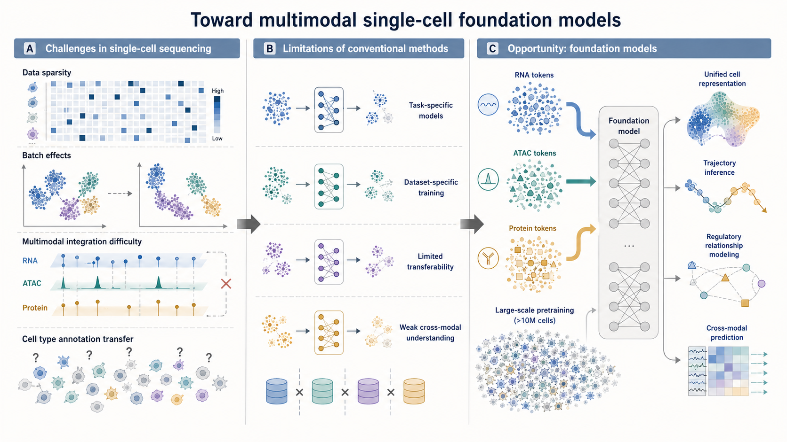

研究背景

单细胞多组学大模型
单细胞测序的挑战与大模型的机遇
首先来看为什么需要单细胞多组学大模型。单细胞测序面临几个核心挑战：第一是数据稀疏性，dropout事件导致大量零值；第二是批次效应，不同实验平台间存在系统性偏差；第三是多模态整合困难，RNA、ATAC、蛋白等模态联合分析很有挑战性；第四是细胞类型注释，跨数据集迁移标注成本很高。而大模型的出现为我们提供了新的机遇。预训练加微调的范式已经在自然语言处理和计算机视觉领域取得了突破，同时单细胞数据量级已经超过一千万细胞，足以支撑大规模预训练。我们可以把基因表达类比为细胞语言进行序列建模。